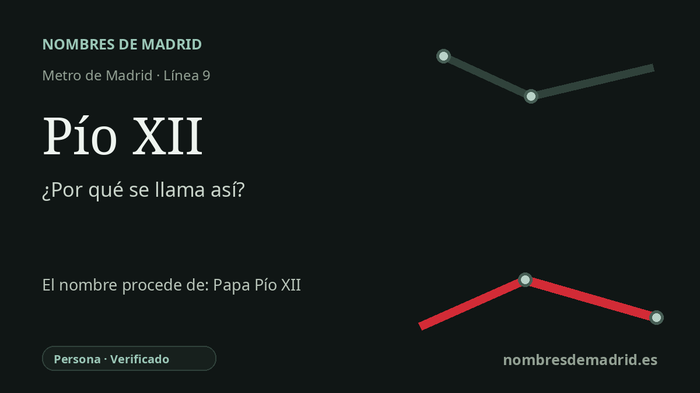

Publicado el · Investigación de Nombres de Madrid · Cómo verificamos cada origen · 7 fuentes consultadas
Respuesta rápida
La estación de Pío XII toma su nombre de la avenida de Pío XII, vía madrileña dedicada al papa Pío XII, nacido Eugenio Pacelli. La estación se abrió el 30 de diciembre de 1983 en el tramo norte de la línea 9.
La historia del nombre
El origen directo del nombre de la estación es local y práctico: Pío XII se llama así por la avenida de Pío XII, la vía bajo la cual y junto a la cual se sitúa la parada en Chamartín. La ficha actual del CRTM identifica la estación de la línea 9 como Pío XII y ubica sus accesos en la avenida de Pío XII, números 4 y 16.
El nombre anterior que hay detrás de la avenida es el del papa Pío XII, nacido Eugenio Maria Giuseppe Pacelli en Roma el 2 de marzo de 1876. Fue elegido papa el 2 de marzo de 1939, tomó el nombre de Pío XII y dirigió la Iglesia católica hasta su muerte en Castel Gandolfo el 9 de octubre de 1958. En el callejero español, el nombre pontificio queda reducido a Pío XII.
Esa biografía da al topónimo una fuerte carga del siglo XX. El pontificado de Pío XII comenzó pocos meses antes del estallido de la Segunda Guerra Mundial y continuó durante los primeros años de la Guerra Fría. Su actuación en la guerra sigue siendo discutida: sus defensores subrayan la labor asistencial y de protección vinculada al Vaticano, mientras que sus críticos señalan su lenguaje público prudente y su supuesto silencio ante el genocidio.
La avenida madrileña pertenece además a un contexto político y religioso español. El nombre de la vía ya estaba en uso el 31 de diciembre de 1950, cuando la EMT documenta una línea de autobús entre Cibeles y la Avda. Pio XII. Durante el pontificado de Pío XII, la España de Franco y la Santa Sede firmaron el Concordato de 1953, un acuerdo de gran alcance que reconocía la religión católica como la única de la nación española y formalizaba unas estrechas relaciones Iglesia-Estado.
Para la estación de Metro, la prueba más sólida apunta a una cadena indirecta de denominación: del papa a la avenida, y de la avenida a la estación. Una crónica contemporánea de El País indica que el tramo Plaza de Castilla-Avenida de América de la línea 9 entró en servicio el 30 de diciembre de 1983 e incluía Pío XII entre sus seis estaciones. No consta un nombre anterior de la estación ni un cambio posterior de denominación.